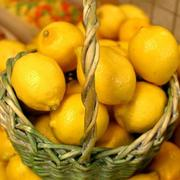
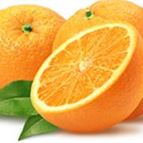

Dynie:
Cytryny:
Pomarańcze:
Akapit
Pomarańcza jest znakomitym źródłem witaminy C, beta-karotenu i witamin z grupy B. Pomarańcze warto jeść z błonkami oddzielającymi cząstki owocu - są dobrym źródłem błonnika i flawonoidów wzmacniających działanie witaminy C. Olejek pomarańczowy ma zaś właściwości uspokajające i przeciwdepresyjne. Jakie witaminy zawierają pomarańcze? Pomarańcza ma dużo beta-karotenu i witaminy C oraz wody. Woda doskonale wypłukuje z organizmu toksyny, a witamina C jest cenionym antyoksydantem, który unieszkodliwia agresywne cząstki tlenu powstające m.in. z powodu stresu, palenia papierosów, alkoholu, małej ilości snu. Jedna pomarańcza pokrywa dzienne zapotrzebowanie na witaminę C. Pomarańcze dostarczają też dużo witamin z grupy B (w tym kwas foliowy) korzystnych dla skóry i nerwów oraz cennego potasu, od którego zależy prawidłowe ciśnienie krwi i rytm serca. Zawierają substancje blokujące pierwszą fazę powstania komórek nowotworowych i związki o działaniu przeciwbakteryjnym. Pomarańcze obfitują w błonnik pokarmowy, który usprawnia przemianę materii. Warto jeść pomarańcze razem z błonkami rozdzielającymi cząstki oraz białą częścią skórki. Znajdują się tam bowiem flawonoidy, które wzmacniają działanie witaminy C. To właśnie dlatego witamina C naturalnego pochodzenia jest lepiej przyswajalna niż jej syntetyczny odpowiednik. źródło: http://www.poradnikzdrowie.pl/zywienie/co-jesz/pomarancze-wlasciwosci-lecznicze-i-wartosci-odzywcze_37382.html